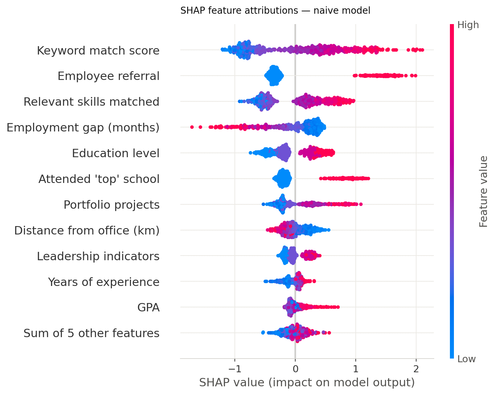
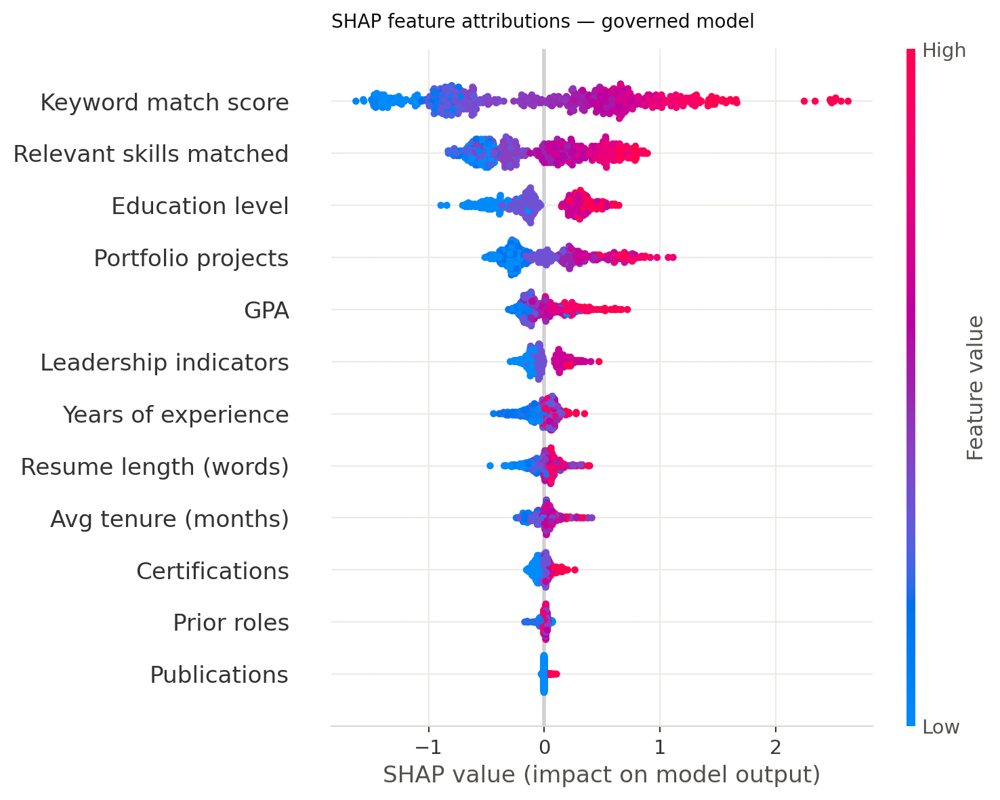
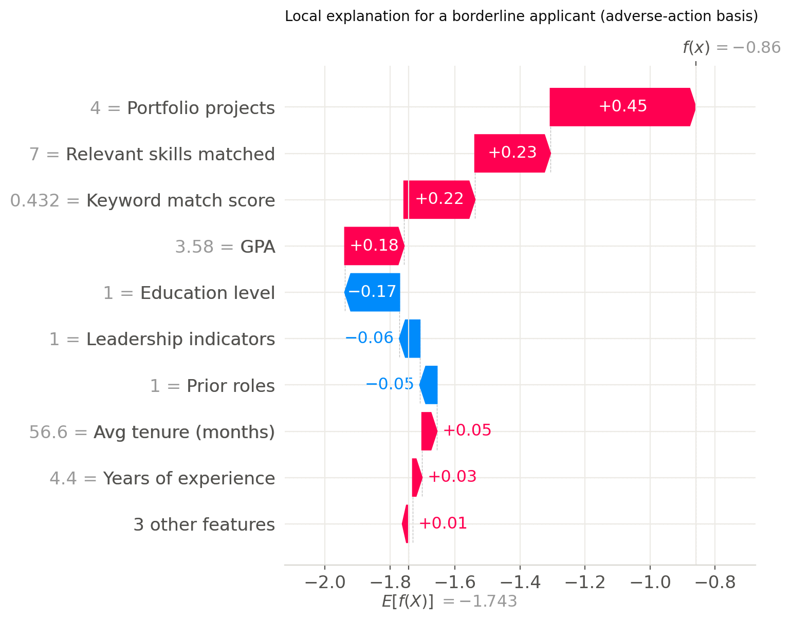

The model that best predicts what recruiters did is not the model that best finds qualified people.
I trained two models on the same applicants. The naïve model scores higher against recruiter decisions (AUC 0.911 vs 0.865) and lower against merit (0.915 vs 0.961). In production you only ever see the first number, so picking the model with the best visible score gets you the discriminatory one, while every other part of the process was done right. Accuracy on a biased label is not a measure of quality. It just measures how well you copied the bias.
The training data is a synthetic pool of 12,000 applicants where qualification is known and generated separately from protected class. There is no real ability difference between groups in this world, so anything the audit finds is bias I put there on purpose and can measure.
Run both models live → interactive demo
Build a candidate, then turn one of the biased features on. For the borderline applicant the demo opens on, an internal referral is worth +44.8 points to the naïve model and 0.0 to the governed one, because that feature is not in it. The scoring runs in your browser and matches scikit-learn to 1e-13.
Read the work
-
Interactive demo
Score a candidate against both models at once and watch what each feature is doing. Advance, abstain, or route to review, live.
Runs in your browser · no server -
Governance report
The main deliverable. Model overview, the fairness audit, explainability, six guardrail layers, the monitoring plan, compliance, and sustainability.
Web edition · PDF -
Notebook
The whole pipeline end to end: building the data, training both models, the fairness audit, SHAP, guardrails, and monitoring.
Static HTML · seeded at 42 -
Model card
What the model is for, what it is not for, how it performs, and the disparity that is still there.
Version 1.0 · Markdown source -
Figures
Eight charts: the performance tradeoff, impact ratios, SHAP before and after, the monitoring timeline, and energy.
All generated fromsrc/ -
Source code
Ten Python modules covering the data, both models, the fairness audit, SHAP, guardrails, monitoring and energy, plus the tests that check the report against them.
GitHub · Python, seeded at 42
Key results
| Metric | Naïve model | Governed model |
|---|---|---|
| AUC vs recruiter decisions (the only number you can see in production) | 0.911 | 0.865 |
| AUC vs merit | 0.915 | 0.961 |
| Worst impact ratio — sex | 0.612 | 0.967 |
| Worst impact ratio — ethnicity | 0.633 | 0.833 |
| Worst impact ratio — intersection | 0.488 | 0.652 |
| Attribution flowing through the biased features | 37.7% | 0.0% |
| Red-team cases passed | — | 7 of 7 |
| Annual pipeline energy at 250,000 resumes a year | — | 0.19 kWh |
Figures

Performance tradeoff. The grey bars are the only thing a team can see in production. Picking on them ships the naïve model. The governed logistic model is 2.1 KB, uses twelve features, and is the best one at the actual job. 
Impact ratios. By ethnicity. Dropping the four biased features lifts every group above the 0.80 line. 
What each model relies on. Taking the biased features out moves the weight onto merit. Keyword match goes from 18.8% of the decision to 33.3%. Red bars are the biased features. 
SHAP — naïve model. Referral, school prestige and employment gap carry 37.7% of the decision between them. 
SHAP — governed model. The same view once the four biased features are gone. None of the decision runs through them. 
Local explanation. One borderline applicant broken down feature by feature. This is what you would have to show a candidate who asked why. 
Monitoring timeline. Six simulated months, with a layoff wave pushing the applicant pool toward senior candidates with recent gaps. Accuracy holds flat the whole way while fairness moves on its own. 
Energy. Annual pipeline energy at 250,000 resumes a year, which comes out at 0.19 kWh. That is 403 to 4,019 times less than sending every resume to a language model. Both bars carry the same parsing and serving cost.
{kind=link}
{kind=link}
{kind=link}
What I did not fix
- The governed model still fails at the intersection. Female / Hispanic applicants come out at 0.652, with a 95% interval of 0.370–0.949 and an 87% chance the breach is real rather than noise. It passes on sex and on ethnicity separately and fails on both together. I tried a few things and none of them were honest fixes, so it is reported rather than hidden.
years_experiencestill moves with age group. I kept it because the job genuinely needs it, but that is a real exposure and not a solved problem.- The data is synthetic. The numbers show that the method works. They do not tell you what would happen on a real applicant pool.
- This belongs in front of a recruiter, not in place of one. It ranks and it routes. There is no code path in it that rejects anybody.
Running it
Every figure and number on this site comes out of the code, seeded at 42, with a test that checks the report's claims against what the code actually computed.
pip install scikit-learn pandas numpy matplotlib shap scipy joblib
cd src
python3 generate_data.py && python3 train.py && python3 fairness.py \
&& python3 significance.py && python3 explain.py && python3 monitor.py \
&& python3 sustainability.py && python3 figures.py
cd ../tests && python3 verify_report.pyThe generated data and the trained model files are kept out of the repository on purpose. The commands above rebuild them and give the same numbers every time.